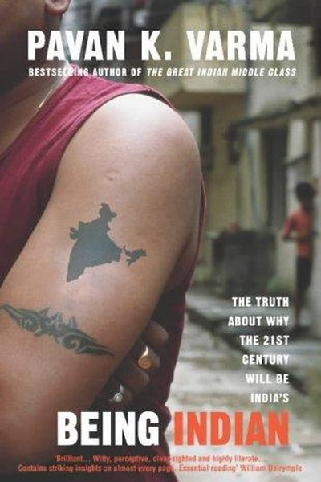

Library › Psychology & People
Being Indian — Summary & Key Lessons

The hidden rules of the Indian mind — family, ambition, faith and the art of getting by.
📖 OPEN THE FULL INTERACTIVE BREAKDOWN →🌐 Read it in Hindi, Hinglish, Gujarati, Tamil & 22 more languages — free, with audio.
💡 The Big Idea
To understand India, look past the stereotypes: Indians are simultaneously deeply family-bound and fiercely individualistic, spiritual and materialistic, hierarchical and rebellious. Varma dissects the 'Indian psyche' — the centrality of family, the attitude to money, the flexibility with rules — showing that the national character is a bundle of contradictions that somehow works.
🧠 The 6 Key Lessons
Lesson 1: The Family Is India's Real Institution
Chapter 1: The Family
Varma argues the Indian family — joint or nuclear — is the true engine of Indian society: it finances education, arranges marriages, provides identity and acts as social security. Understanding any Indian's decisions requires understanding the family ledger: every choice carries family weight, whether acknowledged or not.
📖 Example: Indian parents routinely sacrifice savings, careers and comfort for children's education — often sending them abroad at enormous cost — while children, in turn, are expected to care for aging parents. This mutual obligation creates both strength (a permanent… Read the full example →
⚡ Do this: Map your 'family ledger': what obligations, expectations and supports shape your big decisions? Make them explicit instead of unconscious.
Lesson 2: Ambition Is Universal — Even Where It Hides
Chapter 2: Ambition
Beneath apparent contentment, Varma finds fierce ambition everywhere in India — the shopkeeper's son studying for civil services, the slum child aiming for an IT job. Indians are taught to be humble in expression and relentless in aspiration. Never mistake quiet for lack of drive.
📖 Example: The coaching towns of Kota and the millions appearing for competitive exams each year show ambition at industrial scale. Indian parents' obsession with marks and 'good jobs' is not materialism alone — it is ambition disciplined into the only channels they… Read the full example →
⚡ Do this: Look under your own quiet surface: name the ambition you hide to seem humble, and give it a written plan.
Lesson 3: Money Is a Means, Status Is the End
Chapter 3: Money
Indians' relationship with wealth is complex: frugal in daily life, lavish at weddings and festivals. Varma explains that money in India is often a vehicle for status, family honor and display — which is why Indians save compulsively yet spend spectacularly on occasions. Understand the social function of money before judging spending.
📖 Example: A middle-class Indian family will haggle over vegetables yet spend crores on a daughter's wedding — not from irrationality but because the wedding is a public statement of family standing. The same logic drives gold purchases, festivals and 'status'… Read the full example →
⚡ Do this: Before your next purchase, ask: is this serving a need or a status signal? Decide consciously which one you actually want to fund.
Lesson 4: Spirituality and Pragmatism Are One Skill
Chapter 4: Faith and Practicality
The same Indian who prays at every temple also navigates the world with sharp pragmatism. Varma shows this is not hypocrisy but a functional split: faith provides psychological resilience, while pragmatism handles the daily game. The two are not enemies; they are a division of labor.
📖 Example: Indian business families routinely start ventures with a puja and end negotiations with hard numbers — ritual sets the emotional stage, pragmatism closes the deal. This ability to hold both worlds is why Indian professionals adapt so well across cultures. Read the full example →
⚡ Do this: Give yourself both: a ritual of reflection (faith, journaling, meditation) and a hard-nosed review of your numbers. Keep them separate days.
Lesson 5: Flexibility With Rules Is a Survival Strategy
Chapter 5: The Rules
Varma examines the Indian tendency to bend rules — the 'jugaad' instinct — and explains it as a rational response to systems that are rigid in form but broken in practice. When institutions fail, individuals improvise. The fix is not moralizing about rule-breaking but repairing the systems that force it.
📖 Example: From paying 'speed money' to bypassing queues, Indians routinely negotiate with rules because official channels often fail. Rather than a character flaw, this is what happens when systems are slow, arbitrary or corrupt — the improvisation is a symptom, not… Read the full example →
⚡ Do this: Where your team bends rules daily, stop blaming individuals — document which system failures force the bending and fix the system.
Lesson 6: Contradictions Are Features, Not Bugs
Chapter 6: The Paradox
Varma's central lesson: India does not resolve its contradictions — it carries them simultaneously. The country is ancient and young, spiritual and material, hierarchical and democratic. Trying to make people fit one neat identity is the real error. Maturity is learning to hold opposites without collapsing.
📖 Example: India runs the world's largest democracy while retaining caste, celebrates both Bollywood glamour and temple austerity, and modernizes at internet speed while preserving centuries-old festivals. Each contradiction is load-bearing — remove one side and the… Read the full example →
⚡ Do this: List your own contradictions — the parts of you that seem to conflict. Instead of suppressing one, ask how both can serve different situations.
✅ 5-Step Action Plan
- Write your family ledger: obligations, expectations, supports shaping your decisions
- Name the ambition you hide and give it a plan
- Decide consciously which purchases serve needs vs status
- Pair a reflection ritual with a hard numbers review
- Document one system failure that forces rule-bending in your team and fix it
⚠️ When This Doesn't Work
⚠️ When this doesn't work: Cultural generalizations — even affectionate ones — flatten real people; 'the Indian psyche' does not describe every Indian, and using national-character explanations can excuse harmful norms (like family pressure or rule-bending). Use the insights to understand yourself, not to stereotype others.
💀 The Graveyard Proves It
🎲 The Dice Game — One Game of Dice That Cost a Kingdom Its Honour. Burn: Draupadi publicly humiliated; Yudhishthira's moral authority never recovered. Read the full case study →
💬 Best Quotes from Being Indian
- “India is a land of paradoxes, and the Indian mind is its most interesting paradox.”
- “The Indian family is both a safety net and a straitjacket.”
- “We worship success and forgive failure, but we never forgive indifference.”
Interactive version: mark lessons as read, listen in your language, share quote cards.